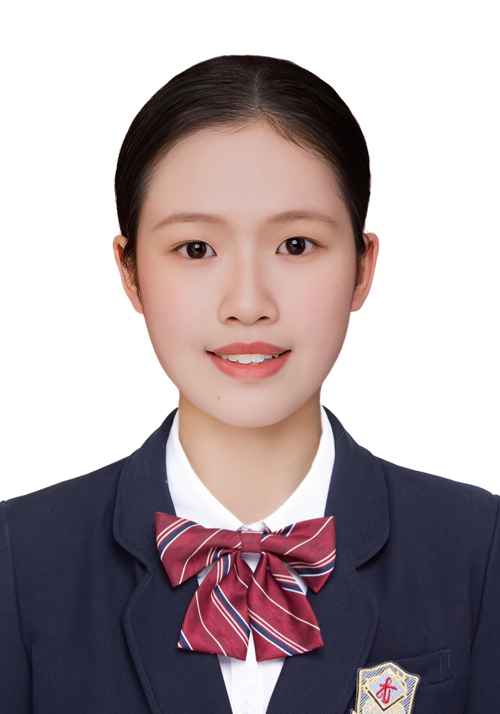

江苏省苏州实验中学
高中
ABOUT · EDUCATION
Angela · 夜行衣
Hsienyao Yang
📚 非主流中文系学生@WHU 大二｜Digital Humanities｜在大陆读书的台湾人｜跨文化研究｜AI+人文｜ESTJ-A
👩🏻💻 Hackathon Builder｜多项赛事一等奖
🎨 《姑苏繁华图》数字活化展览项目落地中
🤓 多项竞赛负责人｜国家级、省级一等奖竞赛获奖者
🧩 湖北校媒品牌部负责人｜武大自强新闻宣传中心摄影视讯部成员
🙌🏻 内容创作者｜欢迎关注@Angela的两岸观察日记
🧙🏻♀️ 多方言使用者｜古筝｜街头流浪歌手｜摄影｜徒步
高中
中文系 · 汉语言文学

01 · DIRECTION
02 · ALL WORK
产品、研究与运营采用不同的叙事标准；二苏诗词同时归入产品和数字人文，但共用同一案例页。
04 · RECOGNITION
武汉大学站第一名 · 入选大区赛
一等奖（第一名）
全国一等奖
中南赛区一等奖
05 · CONTACT
欢迎讨论 AI 产品、数字人文、用户研究、内容策略，以及文化与技术相遇的新方式。
2024311111143@whu.edu.cn ↗